CANTINHO
Minas Gerais home cooking, Dona Terezinha’s way.
Self-service lunch and dinner on Castor Ave, Northeast Philadelphia. 20+ years.
- Open
- Every day, 11am to 10pm
- Saturday
- Feijoada da Dona Terezinha
- Delivery
- Marmita $14, from 6pm
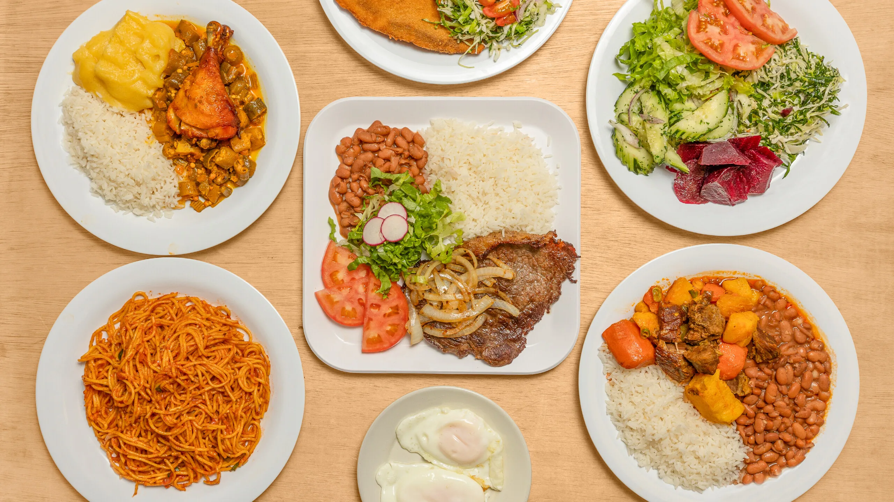
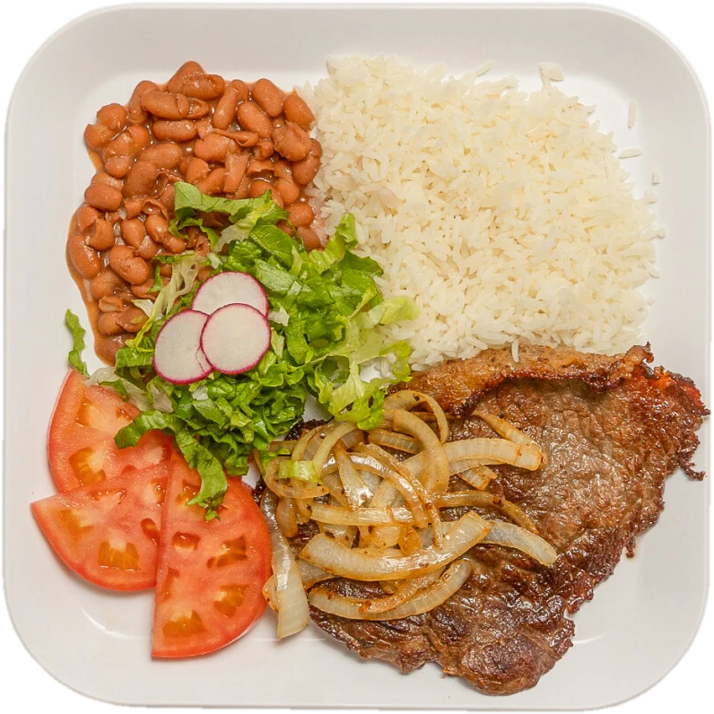
One plate. Then the whole table.
Self-service mineiro: fill your plate with what Dona Terezinha cooked today.
Arroz e feijãoon every plate, every day
Carnesbife, frango, carne de panela
Acompanhamentosmacarrão, angu, ovo
Saladaslettuce, tomato, beet, cucumber
The hot line, cooked the same day.
Walk the line and build your plate. Arroz, feijão, carnes, acompanhamentos and saladas.
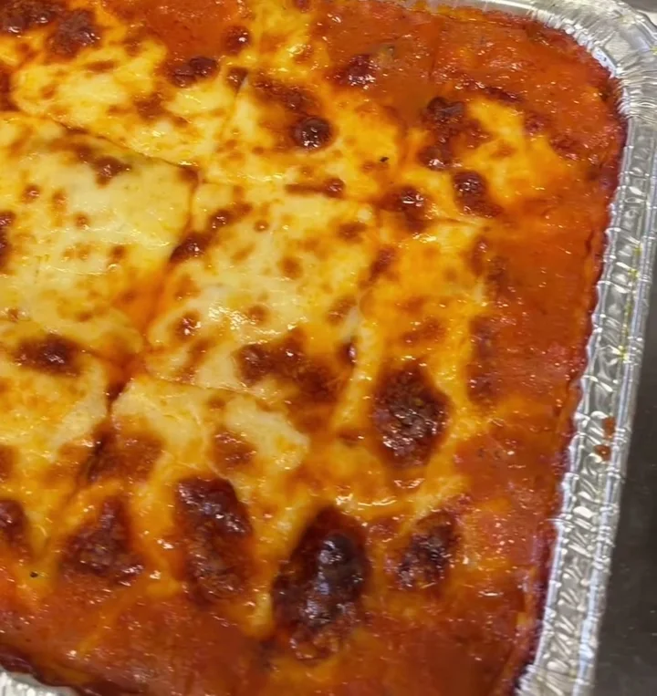
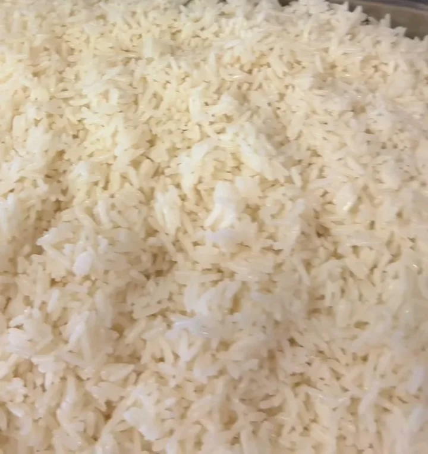
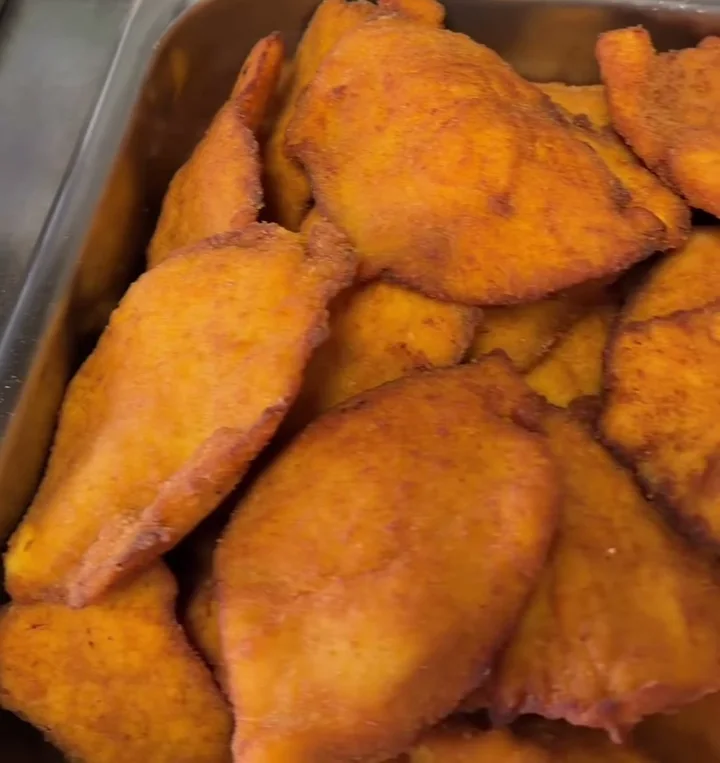
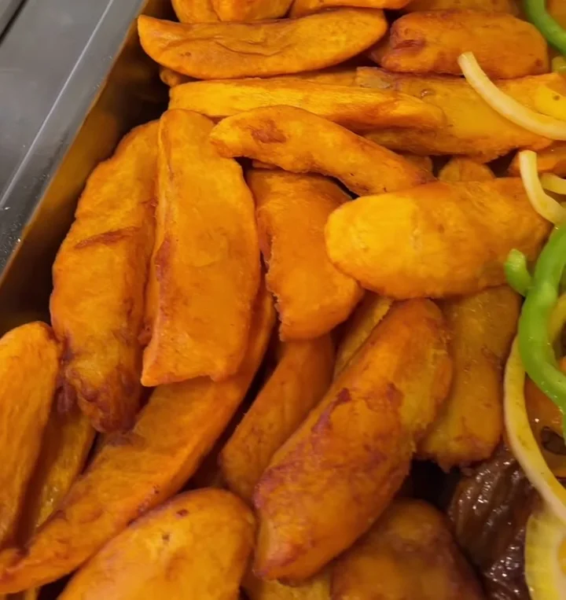
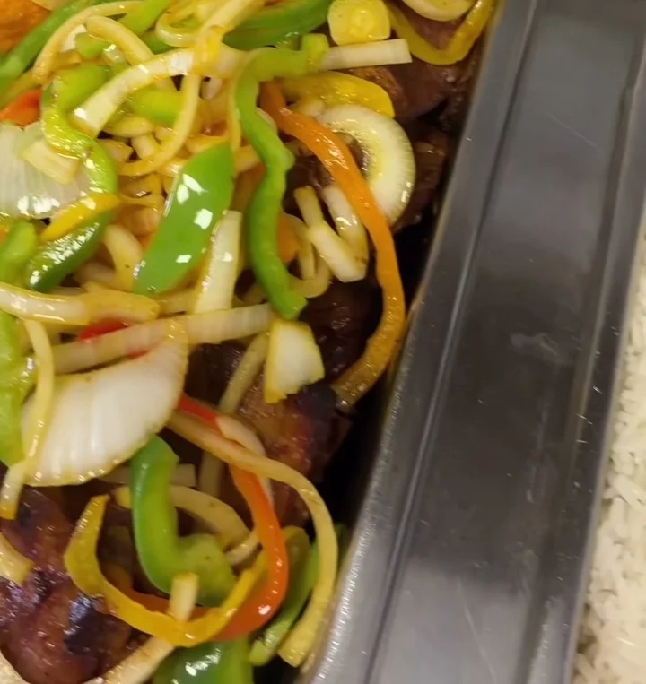
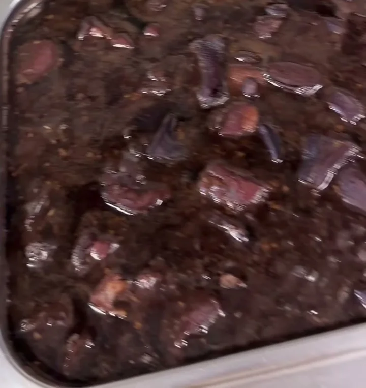
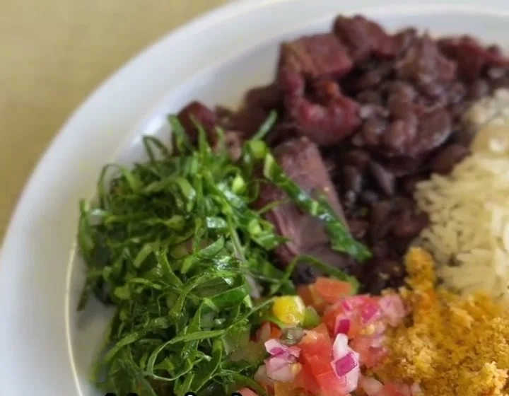
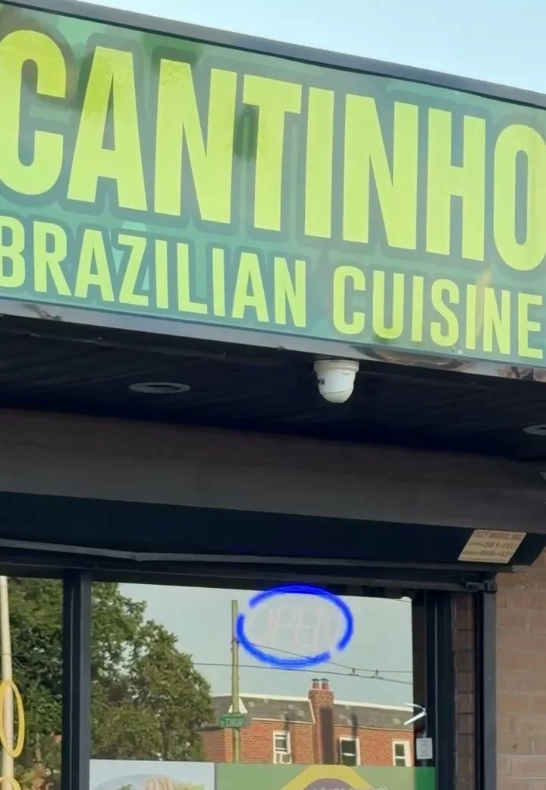
Every day has its dish.
- ThursdayCanjiquinha da Dona Terezinha$6
- SaturdayFeijoada, with rice, couve, farofa and vinagrete
- SundayFamily lunch. Bring everyone.
- Every day, 6pmMarmita delivery: 2 meats, rice, beans, salad, 1 side$14
Parties and family dinners: order trays on WhatsApp.
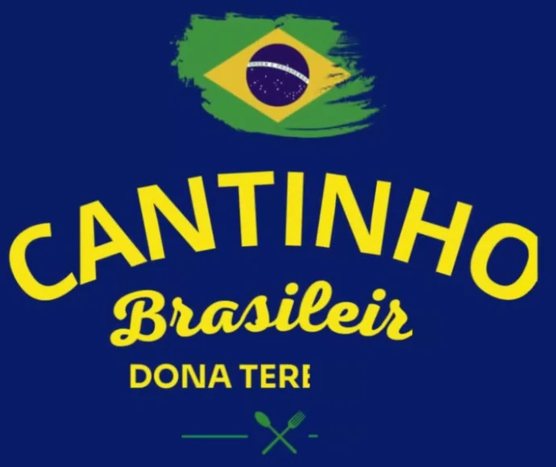
Open every day 11am to 10pm
Pull up a chair.
Dona Terezinha’s recipes, 20+ years on Castor Ave. Seen on Rede Globo’s É de Casa.
- Where
- 7536 Castor Ave, Philadelphia, PA 19152 · Directions
- Hours
- Every day, 11am to 10pm
- Delivery
- Marmita $14 + delivery fee, every day from 6pm
- Call
- (215) 745-1381